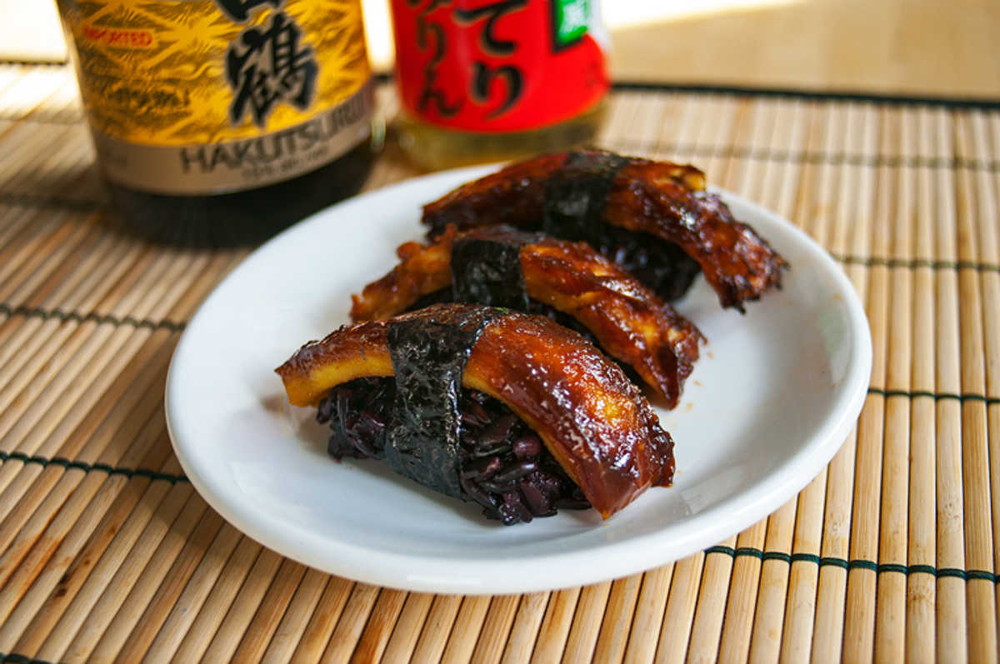
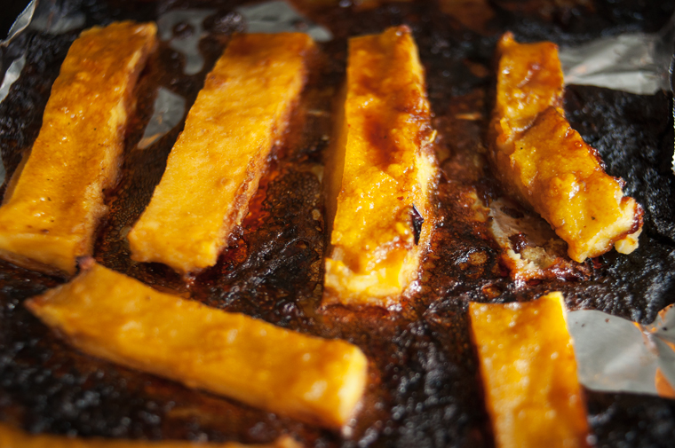

sweet mock eel nigiri
2 servings — 50 minutes
Burmese tofu is not really tofu—we know it's confusing. Burmese tofu is made with chickpea flour, one of our staple foods. It takes 10 minutes to make and sets under 1 hour. It's a great soy-free alternative, and the texture is comparable to that of soft tofu.
The original recipe for chickpea tofu was sourced from a book called The Burmese Kitchen by Aung Thein. This recipe will use up about half of the burmese tofu, which means you'll have a whole other half to use in other meals.
We thought the chickpea tofu would be well-suited as a 'mock unagi kabayaki', and that it would look especially striking atop some black rice.

The sauce served over unagi (eel) kabayaki is sweet, with hints of caramel. Most Japanese sauces are easy to make, and usually require around 3-4 ingredients, these almost always include: soy sauce, sake, mirin, or Japanese rice vinegar. If you want to cook Japanese food, having these around is a must.
 black glutinous rice140 g
black glutinous rice140 g japanese rice vinegar7 ml
japanese rice vinegar7 ml whole cane sugar15 g
whole cane sugar15 g nori sheets1 sheet
nori sheets1 sheet
rice
- Soak 140 g (~3/4 cup) of black glutinous rice overnight.
- Drain the rice. Add water to a pot, superimpose steam basket and add rice in it, cover with lid and steam for 40 min. After that time, pour 240 ml (~ 1 cup) of hot water over the rice. Shake the rice, and let it steam for another 10 min. Remove from heat, keep covered until serving time.
- Put 7 ml (1 1/2 tsp) of Japanese rice vinegar, 15 g (1 tbsp) of whole cane sugar in a sauce pan. Stir over low heat, until sugar crystals dissolve. Let cool.
- Once rice is cooked, transfer to a flat tray, and pour sushi dressing over it. Mix dressing into rice with a spatula, using a sideways cutting motion. Cover with a damp towel, and let cool.
 soy sauce30 ml
soy sauce30 ml mirin30 ml
mirin30 ml- whole cane sugar15 g
 sake15 ml
sake15 ml
sauce
- Mix 30 ml (2 tbsp) of soy sauce, 30 ml (2 tbsp) of mirin, 15 g (1 tbsp) of whole cane sugar and 15 ml (1 tbsp) of sake.
- Bring to a boil in a pan, lower heat and let thicken for a few minutes.
 vegetable bouillon700 ml
vegetable bouillon700 ml chickpea flour85 g
chickpea flour85 g sea salt1.25 g
sea salt1.25 g ground turmeric5 g
ground turmeric5 g
chickpea tofu
- Bring 350 ml (1 1/2 cups) of vegetable bouillon to a rolling boil in a pot.
- Mix 85 g (1 cup) of chickpea flour with 1.25 g (1/4 tsp) of salt and 5 g (1 tsp) of ground turmeric. Add an additional 350 ml (1 1/2 cups) of vegetable bouillon. Stir until the mixture is lump-free.
- Lower to medium heat, and pour in chickpea batter. Whisk continuously for 5-10 minutes, until thickened.
- Pour into a 8x8 baking dish lined with a baking mat. Smooth out top with the back of a spoon.
- Let cool and set for 1 hour, then refrigerate for a little while longer before cutting. This will give the 'tofu' time to set.
- After 1 hour, cut into 12 pieces, and then cut in 2 again lenghtwise to make them fit over nigiri.
- Preheat oven to 180 °C (350 °F).
- Line backing sheet with a baking mat, line up pieces of chickpea tofu.
- Bake for 15 minutes. Remove from oven, brush chickpea tofu with unagi sauce and bake for an additional 15 minutes.
- Shape tablespoons of black rice into oblongs, smear tops with a bit of wasabi, lay a nori strip texture-side up, place strip of chickpea tofu as well as the rice ball (wasabi side facing downwards) and finally fold nori over bottom of rice (cut off excess, you can wet the edges with a bit of water if ever it isn't sticking).
- Makes about 12 nigiri. If you have nigiri molds, shaping the rice into ovals will be very easy. Otherwise use your hands, keep them moist so the rice doesn't stick.